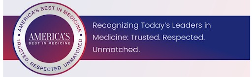
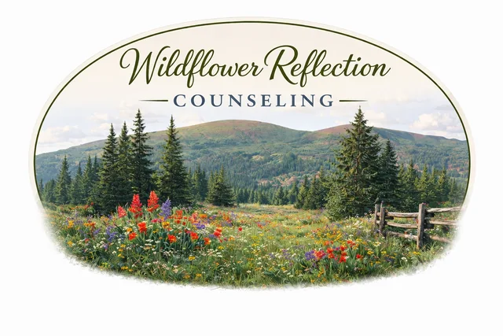

MEET YOUR COUNSELOR
Hello, I'm
Christine.
Christine Kayga, LPC and Clinical Supervisor
I'm a Licensed Professional Counselor (LPC) and Clinical Supervisor. I offer individual counseling for people ages 16 and older, as well as supervision for LPCCs.
Let's connectTHE PERSON BEHIND THE PRACTICE
A little more
about me.
Hello! I'm Christine Kayga, and I am passionate about supporting individuals through life's challenges while helping them develop the skills needed to build resilience, strengthen confidence, and become the healthiest version of themselves. I believe in creating a supportive, empathetic space where individuals feel heard, valued, and empowered throughout their personal growth.
Originally from Minnesota, I spent my summers enjoying the lakes and North Woods, where I developed a deep appreciation for the calming and restorative qualities of nature. Since moving to Colorado, I have continued to nurture that connection through hiking and exploring the outdoors. I believe that connecting with nature can provide opportunities for reflection, grounding, and personal growth.
In 2025, I founded Wildflower Reflection Counseling as a way to bring together my passion for counseling, personal growth, and the healing connection between individuals and nature.
My counseling career began in education, where I spent six years working as an elementary school counselor in Colorado Springs. In 2022, I transitioned into private practice, where I had the opportunity to work alongside an incredible nonprofit team of counselors who helped shape my professional identity and therapeutic approach. These experiences strengthened my commitment to providing compassionate, individualized care.
I feel deeply connected to the Front Range community and value the opportunity to walk alongside individuals as they navigate life's challenges, discover their strengths, and work toward meaningful change. My goal is to provide each client with a supportive and personalized counseling experience that honors their unique journey.
My Counseling Approach
I believe in an integrative, trauma-informed approach to counseling, recognizing that each individual has unique needs, experiences, and strengths. I strive to create a safe, supportive, and nonjudgmental environment where clients feel heard, respected, and empowered throughout their therapeutic journey. I draw from a variety of therapeutic modalities to provide individualized support, including Person-Centered Therapy, Mindfulness-based techniques, Cognitive Behavioral Therapy, and Solution-Focused Brief Therapy.
I believe in the importance of addressing the whole person and recognize how lifestyle factors, including sleep patterns, can significantly influence emotional well-being and mental health. I strive to help clients develop practical skills, increase self-awareness, and build healthy habits that support lasting growth and positive change.
How I Can Help
I provide individualized counseling and support to help clients navigate challenges, strengthen relationships, and develop skills that promote emotional well-being.
- Individual Counseling: Personalized support to explore challenges, increase self-awareness, and work toward personal growth.
- Conflict Resolution: Developing healthy communication, problem-solving, and conflict-management skills.
- Social-Emotional Learning: Building skills in emotional awareness, empathy, self-regulation, and healthy interpersonal relationships.
- Trauma Recovery and Emotional Wellness: Providing a safe, supportive environment to explore and process past and present traumatic experiences while developing coping skills and building resilience.
Education & credentials
- Licensed Professional Counselor (LPC)
- Clinical Supervisor
- Master of Arts, Counseling and Human ServicesUniversity of Colorado, Colorado Springs (UCCS)
- Bachelor of Arts, PsychologyBemidji State University (BSU)
Professional training
- Safe Zone Certification

Professional profiles
Learn more about Christine on her professional listings:

FIND YOUR STARTING POINT
Where would you
like to begin?
Explore individual counseling or professional supervision, or visit Christine's professional profiles.